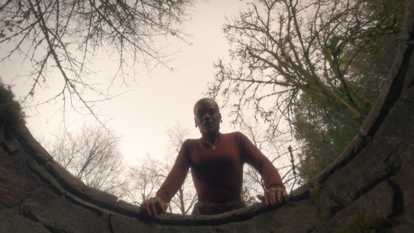

Episodios
Al ser una serie de terror, La Maldicion de Bly Manor puede incluir temas y situaciones incomodas para ciertas personas.
Aquí encontraran breves resumenes de cada episodio de forma que puedan juzgar sus contenidos y saltearlos si fuese necesario, pero aun asi
comprender los episodios siguientes
Episodio 1: El Mejor de los Lugares
Durante una cena de ensayo para una boda, una mujer comienza a contar la historia que concierne a la serie: una mujer estadounidense,
llamada Dani es contratada como Au Pair para cuidar a los sobrinos de Henry Wingrave, Flora y Miles, en su mansion en Bly; Alli se
encuentra con los demas empleados de la casa (Jamie la jardinera, Hannah el ama de llaves, y Owen el cocinero) y los primeros indicios de que
la mansion no es un lugar normal.
Este primer episodio no tiene demasiados sustos, pero nos introduce al fantasma mas pertinente (La Dama del Lago), a una aparicion que
persigue a Dani, y al hecho de que la predecesora de Dani, Rebecca, se suicido poco antes.
Episodio 2: El Alumno
En este episodio se introduce el hecho de que Rebecca tuvo un amante, la apracicion que sigue a Dani esta relacionada a un par de anteojos rotos
que ella posee; hay una escena que puede ser desconcertante en la que Miles actua de forma extraña hacia Dani, pero no hay ningun tipo de
agresion.
Episodio 3: Las dos caras (Parte 1)
En este episodio se presenta como inicio la relacion entre Rebecca y la aparicion del episodio anterior, su amante Peter, y de como el se volvio
cada vez mas posesivo de ella.
En el presente, los adultos, quienes no saben que Peter esta muerto, creen que esta merodeando cerca de la mansion, aunque la policia no lo encuentre.
La manana siguiente encuentran a Flora Junto al lago, observando al fantasma de Rebecca, quien esta en el mismo lugar en el que antes se la avisto.
Episodio 4: Los amigos de los amigos
Este episodio comienza mostrando la vida de Dani antes de viajar al Reino Unido para ser la Au Pair de Bly: estaba comprometida con un hombre
llamado Edmund, aunque ella no estaba enamorada de el, debido a presiones de su familia. La noche en que el se percato de que sus sentimientos
no eran correspondidos lo atropello un camion, y desde entonces Dani no para de ver a su fantasma.
Luego de asistir a una pequena ceremonia por la muerte de la madre de Owen, Dani logra dejar ir al espectro de Edmund y quema sus anteojos.
Episodio 5: El altar de los muertos

Este episodio se basa en el punto de vista de Hannah de varios eventos, salta entre varios momentos de la vida de Hannah durante su estadia
en Bly: la primera vez que hablo con Owen, la ceremonia frente a la hoguera del episodio anterior, momentos con Rebecca. Y, en base a sus
recuerdos, aprendemos que Peter y Rebecca pensaban en mudarse juntos a Estados Unidos
Por desgracia, antes de que pudiesen mudarse, Peter choco con la Dama del Lago, quien lo arrastro hasta el fondo de la laguna de la mansion.
Tras aceptar su nueva situacion Peter aprende puede poseer a las personas vivas, aunque generalmente se limita a Miles. Cuando Hannah se
percata de que Miles esta actuando de forma extraña, Peter (poseyendo a Miles), la empuja dentro de un pozo seco. El mismo pozo en el que ella
miraba el primer episodio. La Hannah presente en la serie estuvo muerta desde el principio.
Episodio 6: El rincon feliz
Escenas retrospectivas muestran que Henry, el tio de los niños que cuida Dani, es en realidad el padre de Flora, ya que se estaba acostando
con la esposa de su hermano antes de sus muertes. No tiene mucho contacto con su hija (nadie sabe su verdadera relacion), y se niega a
contestar las preguntas de Dani sobre su erratico comportamiento. Dicho comportamiento esta siendo causado por las repetidas posesiones de
parte de Rebecca.
Episodio 7: Las dos caras (Parte 2)
Se muestra como los fantasmas que permanecen mucho tiempo en Bly pierden sus memorias, y como Peter intento escapar poseyendo a Rebecca. Cuando
no funciono, la ahogo en el lago y la convencio de usar a los niños como recipientes permanentes. En el presente, los fantasmas poseyendo a los
niños secuestran a Dani, pero Flora y Rebecca la liberan mientras Peter esta distraido; por desgracia, su escape es interrumpido por la Dama
del Lago.
Episodio 8: La leyenda de ciertas ropas antiguas
Este Episodio se concentra en la vida de la Dama del Lago, cuyo verdadero nombre es Viola. Explica que vaga por los pasillos de la mansion
buscando a su hija (o cualquier persona), para llevarlas con ella al lago, ya que alli esta el cofre con los regalos que le dejo antes de morir.
Episodio 9: La bestia en la jungla
Dani consigue salvarse al convencer al fantasma de Viola a que habite su cuerpo y vive muchos años con Jamie en estados unidos, mientras
los demas habitantes de Bly pierden de a poco las memorias de los incidentes, hasta que comienza a sentir el impulso de ahogarse a si misma
y a Jamie; asi que se ahoga en el lago de Bly.